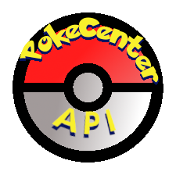

<div class="ticker-wrap">
    <div class="ticker">
    <div class="ticker__item">Dec 13 - #12DaysOfBulba Trade: As part of our holiday celebrations, our @BulbaTrade team will once more be running a #12DaysofBulba Trade giveaway. The giveaway period this year is running from December 13th to December 24th. To have a chance at getting one of these Pokémon, deposit a Corvisquire named "12DaysBulba" on the GTS to the team can locate you and trade them over.</div>
    <div class="ticker__item">Dec 10 - New weekly content coming to official Pokémon Twitch channel: This week, The Pokémon Company announced has announced that they will be broadcasting new content on a regular weekly schedule on the official Pokémon Twitch channel, with content including Pokémon anime episodes and movies, as well as (re)broadcasts of Play! Pokémon tournaments. The schedule for each week will be announced on the official Pokémon Twitter account. In the past, the official Pokémon Twitch channel has been used primarily to broadcast Play! Pokémon organized events, while the anime has appeared as part of a number of Twitch Presents marathons. Moving forward, it's likely we'll see a broad range of content from TPC's back catalog being broadcast.</div>
    <div class="ticker__item">Dec 10 - Pokémon Cereal Returns to US Store Shelves After 20-Year Hiatus: While Pokémon food products are pretty common in Japan, they've been much less common in the west over the past two decades. With the 25th anniversary of the Pokémon franchise looming in 2021 however, it appears this is about to change. In an announcement of new cereals and line extensions this week, General Mills revealed that they would be releasing a new "Berry Bolt" cereal themed around the ever popular franchise mascot Pikachu, who prominently appears front and center on the cereal's bright red box. This cereal features red and blue berry-flavored corn puffs, together with yellow marshmallows in the shape of Pikachu’s head and tail. Continuing the focus on Pikachu, the titular Pokémon makes a grand appearance on the front of the bright red box.</div>
    <div class="ticker__item">Nov 28 - Uri Geller Allows Nintendo to Return Kadabra to the TCG: Illusionist Uri Geller issued an apology for preventing Kadabra from appearing in the Pokémon Trading Card Game due to a lawsuit he filed in 2000. He has stated that he will now allow Kadabra cards to be printed again. In November 2000, Geller claimed that Kadabra was based on his likeness, citing the Pokémon's Psychic type and habit of carrying a spoon. Geller subsequently sued Nintendo for £60 million, saying "Nintendo stole [his] name and [his] signature image." Masamitsu Hidaka, a director and storyboard artist for the Pokémon anime, confirmed in 2008 that Kadabra would not appear in the Pokémon Trading Card Game until an agreement was reached with Geller.</div>
    <div class="ticker__item">Nov 20 - Pokémon Go Beyond Features Announced For Pokémon GO: Pokémon Go has announced that on Monday May 30th. The game will bring new features that will bring the game beyond its current state. This will bring a new Level Cap of Level 50, In Game seasons, Kalos Pokémon, and a new event called 12 days of friendship.</div>
    <div class="ticker__item">Read More News at - https://www.bulbagarden.net</div>
</div>
</div>

